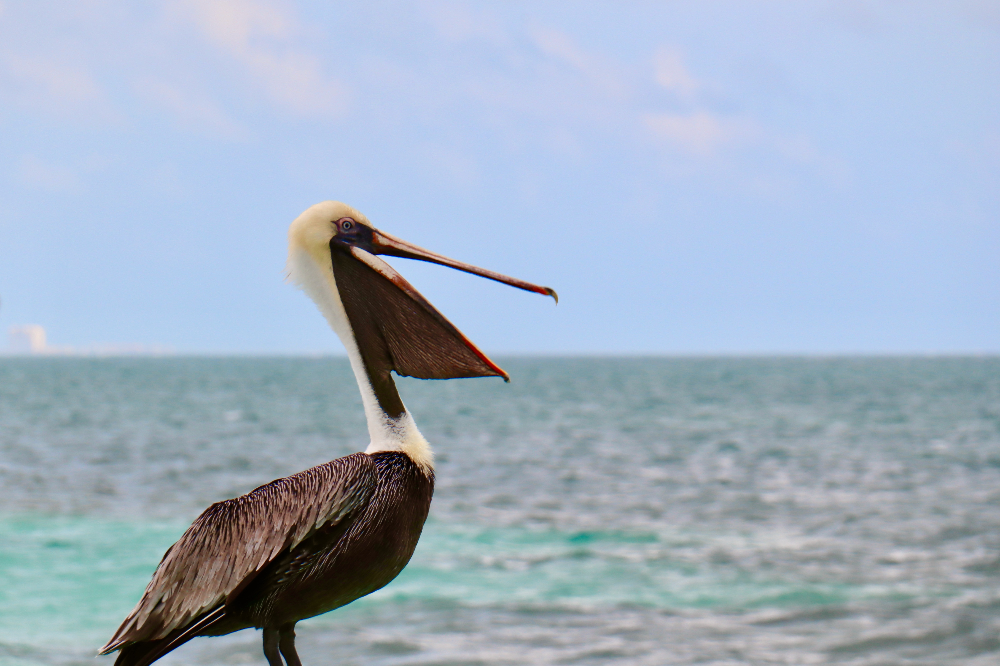

The entire Gray Whale population migrates past the Monterey coastline every winter and spring. These whales have one of the longest animal migrations known, traveling over 12,000 miles from their summer feeding grounds in the Bering Sea to their winter breeding grounds in Baja California and back again. Gray Whales have come back from the brink of extinction and now number over 25,000 individuals and have recently been taken off the endangered species list. Gray Whales are easily observed as they hug the coastline during migration.
Gray Whales are present off Monterey from December through May. Off Monterey, Gray Whales migrate south from December through mid February, with peak numbers occurring during mid January. Whales migrate north from mid February through May, peaking during mid March. Most adult and juvenile whales pass Monterey on their way to Alaska by mid April. Mother gray whales with their newly born calves pass Monterey during April and May. The mother/calf pairs are most susceptible to Killer Whale attacks in the Bay during this period.
Gray Whales reach lengths of 45', are generally gray in color with white mottling, and have many barnacles and whale lice embedded in their skin. They migrate slowly, at about 2-5 miles/hr, and generally blow 3-5 times before fluking up and diving for 2-7 minutes. During this migration they occasionally breach, spyhop, and mate with other Grays. They travel singly or in pods ranging from 2 to 10 whales
Monterey Bay is the best place along the California coast to observe gray whales. Since the shallow continental shelf does not extend very far from shore off Monterey due to the nearshore submarine canyon, Gray Whales can be found within a few miles of the coast in this region compared to 15 or more miles from shore off San Francisco.
The Humpback Whale is an endangered species, occurring in all the world's oceans. The central California population of Humpback Whales migrates from their winter calving and mating areas off Mexico to their summer and fall feeding areas off coastal California. Humpback Whales occur in Monterey Bay from late April to early December. During this period the whales are here to feed on anchovies, sardines, and krill.
Humpback Whales reach lengths of 50 to 55', are dark in color with distinctive nodules on their rostrum, and have pectoral flippers that are nearly a third of their body length. Current population estimates for Humpback Whales off California conducted by Cascadia Research Collective indicate there are about 800 whales in this population. All whales have been photo-identified by natural markings and coloration on the underside of the tail fluke. From this photo-identification work, the migratory movements, calving intervals, association patterns, and population estimates can be determined for these whales.
In recent years, many different Humpback Whales in this population often approach our boat for "friendly" encounters. When engaging in this "friendly" behavior, a whale will often circle our boat, rub up against it, spyhop within several feet of the boat, roll on its side and extend its pectoral flipper toward the boat, and often tilt its head with an eye open, appearing to look up at the boat and people on board. This phenomenon has been increasing each year, probably because this new generation of whales that have never known whaling are becoming curious about boats, and they often stay for several hours investigating our boat. This contact is totally initiated by the whales.
Monterey Bay is one of the best places to observe humpbacks on a day's whale watch because the submarine canyon approaches very close to shore here. The whales are frequently found along the edges of the canyon where prey tends to concentrate. At times, the whales come even closer to shore while feeding on anchovies and can also be found 8-20 miles from shore where concentrations of krill occur in relation to thermal fronts. We attempt to photo-identify all Humpback Whales sighted on Monterey Bay Whale Watch trips and contribute these photos to Cascadia Research.
The Blue Whale is the largest animal ever to live on earth, reaching lengths of 80 to 100'. Blues feed only on krill and are found in Monterey Bay from June through October during times of high krill abundance. Like the Humpbacks, Blue Whales often shift to various feeding locations off central California in search of krill concentrations. Blue Whales begin to migrate south during November. It is still a mystery as to where the Blue Whales gather to give birth and mate, but it is suspected this happens in offshore waters south of Mexico. Blue Whales produce very low frequency sounds that are probably used for long-range communication, with some sounds possibly used to locate dense krill patches. These low moaning sounds can travel over hundreds or thousands of miles across ocean basins.
Blue Whales are truly a majestic species, with a tall narrow blow of up to 30'. A bright blue coloration is easily observed before the whales surface. Because of their size, only part of their body is visible at a time and the dorsal fin is usually observed just before their dive. Blue Whales may lunge feed at the surface to engulf surface swarms of krill or they may fluke up and dive to several hundred feet for deep krill concentrations. A single Blue Whale consumes about 4 tons of krill or 40 million individual krill each day. In Monterey Bay, Blue Whales often occur near the edges of the submarine canyon where krill tends to concentrate.
The population of Blue Whales off California has been estimated to number about 2,200 individuals from work conducted by Cascadia Research Collective. Blue Whales are endangered with only about 10,000 existing in the world. The population off California appears to be the largest and healthiest population of Blues in the world. Each Blue Whale can be identified by photographing the side of the whale with its dorsal fin in view, as Blue Whales have very distinctive mottling patterns on their grayish blue body. We attempt to photo-identify all Blue Whales sighted on Monterey Bay Whale Watch trips and contribute the photos to Cascadia Research for analysis.
Killer Whales occur year-round and are occasionally seen (2-5 times per month) in the Monterey Bay area in pods that average 8 to 20 individuals. Two types of Killer Whales normally occur here, the "transients" and "offshores". "Transient" Killer Whales prey on marine mammals, travel long distances, and tend to have pointed dorsal fins with closed saddle patches. Within Monterey Bay, these whales attack Gray Whales, California Sea Lions, Harbor Seals, Elephant Seals, and Dall's Porpoise. "Offshore" Killer Whales are a recently discovered form that tend to travel in large groups of up to 100 individuals, and tend to have more rounded dorsal fins. These whales probably feed on fish and squid.
In January 2000, "Resident" Killer Whales from Washington State and British Columbia were observed and photographed in Monterey Bay for the first time. This remarkable event is described in our
February 2000 feature.
As part of the Monterey Bay Cetacean Project, we have photo-identified close to 200 individual Killer Whales off California, with the majority identified in Monterey Bay. Killer Whales identified in Monterey Bay have been repeatedly sighted within the same year and over subsequent years. Several of these individual whales have been sighted from southern California to Alaska, indicating they inhabit a large range. We are also monitoring the predatory behavior of Killer Whales and have observed several attacks on Gray Whale calves by Killer Whales in Monterey Bay.
Killer Whales are most frequently sighted in the Bay from January through May and from September through November.
Additional sources of information about Killer Whales in Monterey Bay:
Minke Whales are the smallest of the baleen whales at about 30' in length. In the Monterey Bay region, it is possible to see Minke Whales year-round, but they are most frequently sighted during the summer and fall. These whales are usually found nearshore over rocky bottom regions where they prey on juvenile rockfishes.
Minke Whales do not have a visible blow and usually exhibit erratic surfacing patterns. However, they are easily sighted by their relatively large dorsal fin and dark body. There appear to be some resident Minke Whales that feed in southern Monterey Bay and along the Big Sur coast. They usually are found as singles.
Fin Whales are occasionally encountered during the summer and fall in Monterey Bay and the surrounding waters, although they are more common farther from shore. They are easily identified by their tall blow, dark body, large dorsal fin, and white coloration on their right lower jaw. Fin Whales are capable of traveling at speeds exceeding 20 knots.
Beaked Whales inhabit deep offshore waters, are found in fairly small groups, dive for long periods, and therefore are rarely observed. Baird's Beaked Whales are found only in the North Pacific and are the largest of the Beaked Whales. Sightings of these animals usually occur in the fall in Monterey Bay.
Pacific White-Sided Dolphins, endemic to the North Pacific, are one of the most abundant cetaceans along the central and northern California coastline, often found in herds numbering over several hundred individuals. Monterey Bay, especially the canyon edge which facilitates upwelling and concentrates prey, likely provides an abundant and predictable food source for these dolphins. They feed on small schooling fish and squid. Risso's Dolphins and Northern Right Whale Dolphins, also utilizing this abundant food source, are frequently found in mixed-species herds with Pacific White-Sided Dolphins.
Photo-identification of individual White-Sided Dolphins exemplifies the importance of the area for this species. Especially helpful as "herd markers" are anomalously colored or "white" dolphins that are very distinctly marked and easily sighted within a large school of dolphins. Resightings of distinct individuals indicates that particular groups of dolphins frequent the Monterey area at least seasonally and return to the area in subsequent years rather than new groups of animals continually moving through.
All behavioral states have been observed for these dolphins in the Bay, including travel, feed, rest, and socialize/play. White-Sided Dolphins are one of the most acrobatic and animated species of dolphin in the world, often engaging in multiple mid-air leaps, flips, and somersaults. These dolphins occur year-round in the Bay.
Risso's Dolphin is a relatively large (13') pelagic dolphin found worldwide in warm temperate and tropical seas. In Monterey Bay, these dolphins can be found year-round with school sizes ranging from 10 to over 1000 individuals. Risso's Dolphins are often in the company of Pacific White-Sided Dolphins and Northern Right Whale Dolphins. Risso's Dolphins feed mainly on squid and are frequently encountered in the deeper parts of the Bay.
Like the Pacific White-Sided Dolphin, Northern Right Whale Dolphins are endemic to the North Pacific, with an overlapping range. These dolphins are unique, in that they have no dorsal fin or dorsal ridge of any kind. They are generally a pelagic, offshore species; however, due to the nearshore submarine canyon in Monterey Bay, this species is frequently encountered, most often in mixed species groups with other dolphins.
Common Dolphins are found worldwide, generally in warm water areas. These dolphins have become increasingly more abundant in the Bay since the last El Niño or warm water period occurred in 1982-1983. Two different species occur in Monterey Bay: the Short Beaked and Long Beaked Common Dolphin. The Long Beaked is more common and most abundant from late summer through winter. Common Dolphins are found in large, cohesive groups of up to 5,000 or more individuals.
For more about Common Dolphins, see Feature Story,
Common Dolphins in Monterey Bay.
Like the Common Dolphin, Bottlenose Dolphin have been sighted within the Bay more frequently since 1983. These dolphins can be found in small groups very near shore, often just outside the breaking surf. They are year-round inhabitants of the Bay.
The Dall's Porpoise is endemic to the North Pacific in cool waters and is the most frequently sighted cetacean off central and northern California. Unlike most of the dolphin species, Dall's Porpoise are found in small groups of 3-20 individuals. In Monterey Bay, they are year-round inhabitants that are closely associated with the canyon edges. Along with the dolphin species, they are avid bowriders.
Another year-round resident of Monterey Bay, Harbor Porpoise are found in shallow sandy bottom regions of the Monterey Bay shelf. Harbor Porpoise are found in small groups and generally do not approach vessels.
Sea Lions are one of the most abundant marine mammals found along the Monterey coast. One of the main haul-out sites for Sea Lions is the Coast Guard breakwater in the Monterey Harbor, where there can be over 1,000 sea lions resting on the rocks or in the water. California Sea Lions are a highly intelligent, curious, and playful species. Sea Lions breed to the south, on the Channel Islands, during the summer. At this time, most of the adult males and some juveniles leave Monterey for their rookeries. After mating, the males migrate north again and the females remain in southern California waters. Sea Lion numbers peak off Monterey from fall through spring. Sea Lions are also a regular sight at sea where they at times are seen in groups of more than 100 feeding on schooling fish or squid, either by themselves or with dolphins and whales.
Harbor Seals are a year-round resident of Monterey Bay. These seals are easily identified by their spotted coat, usually white with dark spots or dark gray with light spots. Unlike sea lions, Harbor Seals have shorter flippers and must use low-lying rocks or sandy beaches as haul-out sites. These seals are easily observed along the Monterey shoreline where they haul out during low tides, or while they rest in the water and feed within the kelp forest. During April and May, Harbor Seals aggregate in Carmel Bay to give birth and mate.
Once nearly hunted to extinction, Northern Elephant Seals have rebounded to over 100,000 individuals. Adult males, distinguished by their large nose and size, are more than three times the size of females. These seals spend most of their time at sea and are known to be one of the deepest divers of all marine mammals. They come to shore only during the breeding and molting seasons. The main Elephant Seal rookery off Central California is at Ano Nuevo Island (northern Monterey Bay), where the seals gather by the thousands during the winter. At this time, females give birth to their pups and males battle one another as they compete for harems of females. After the mating season, seals head out to sea and are occasionally seen resting near the surface between diving bouts.
Similar to Elephant Seals, Fur Seals also spend most of their time at sea and travel back to offshore islands only during the breeding season. Fur Seals are easily distinguished from Sea Lions by their long flippers, whiskers, and ears. They are frequently sighted at sea off Monterey during the fall, winter, and spring. At sea, they are usually found alone resting in their distinctive "jug handle" position, with their hind flipper and fore flipper curled up together.
Sea otters are a common sight along the Monterey coast as they inhabit the nearshore kelp forests. The otters, which were once nearly hunted to extinction, now number just over 2,000 individuals. Sea otters are easily observed on all Monterey Bay Whale Watch trips as they rest within the kelp or feed near the kelp on seastars, crabs, urchins, and abalone. After the otters capture a prey item, they bring it to the surface, place it on their belly while floating on their back, and crack it open with their powerful teeth.
Otters have very dense fur, with up to a million hairs per square inch. This keeps them warm along with the insulating air bubbles they blow into their fur. Therefore, otters could easily be threatened by any type of oil spill which could foul their fur. Besides spending a portion of the day grooming, otters divide their time into feeding and resting. Otters usually rest by rolling within the surface kelp until their bodies are wrapped in it. The kelp is anchored to the rocky bottom and by staying with the kelp, the otters will not drift to sea while sleeping.
During mating or courting bouts, a male and female otter will pair up and remain together for several days. During mating, the male grabs onto the female's nose to stabilize himself. The result leaves female otters with red wounds or scars on their noses. This is really the only way to distinguish males from females.
Pups can be born year-round with a peak during the winter. Newborn pups appear as a small ball of fur and are too buoyant to dive with their mother, so they wait on the surface and emanate a loud scream until their mother relocates them after a feeding dive.
Monterey Bay is a very productive region due to intense upwelling of nutrient-rich waters and a deep Submarine Canyon, which provides one of the best places on earth to observe a variety of seabirds, in addition to many species of mammals. The diversity of habitats in the area offers opportunities to observe nearshore, offshore, and migrating seabirds all within range of a half-day or full day boat trip. Seabirds inhabiting Monterey Bay include both local breeders and those migrating from the Arctic and southern hemisphere regions.
Over 90 species of seabirds have been recorded for Monterey Bay. Species that regularly occur, although some are seasonal, include: Brown Pelican, Brandt's Cormorant, Pelagic Cormorant, Sooty Shearwater, Pink-footed Shearwater, Buller's Shearwater, Black-vented Shearwater, Flesh-footed Shearwater, Black-footed Albatross, Laysan Albatross, Northern Fulmar, Black Storm-Petrel, Ashy Storm-Petrel, Fork-tailed Storm-Petrel, Common Murre, Cassin's Auklet, Rhinoceros Auklet, Marbled Murrelet, Craveri Murrelet, Xantus's Murrelet, Pigeon Guillemot, Red Phalarope, Red-necked Phalarope, Parasitic Jaeger, Pomarine Jaeger, Long-tailed Jaeger, South Polar Skua, Arctic Tern, Common Tern, Elegant Tern, Western Gull, California Gull, Heermann's Gull, Bonaparte's Gull, Glaucous Gull, Glaucous-winged Gull, Herring Gull, Mew Gull, Thayer's Gull, and Sabine's Gull.
Marine life diversity within the Monterey Bay region is high. Besides the easily visible species of marine mammals, other types of organisms numbering in the tens or hundreds of species inhabit the area: algae (including kelp), invertebrates, fishes, cephalopods (squids and octopus), gelatinous animals, sharks and rays, and sea turtles.
Extensive tide pools surrounding the Bay offer opportunities for investigating invertebrates and algae. However, many of the creatures inhabit deep water regions over the Monterey Submarine Canyon and are known only from samples collected by research ships and film taken by remote operated vehicles. Besides these nearshore and deepsea species, there are a few animals that because of their habits provide us with excellent opportunities to view them near the surface.
Blue Sharks are a frequent sight during summer and fall. These pelagic sharks move in from warmer offshore waters and are often seen swimming at the surface. Basking Sharks are rare but are occasionally seen feeding on dense swarms of copepods at the surface.
Leatherback Sea Turtles may be seen during summer and fall feasting on dense aggregations of jellyfish. Ocean Sunfish or Mola Molas are regularly seen floating on their sides at the surface during the late summer and fall, but can be seen year-round.